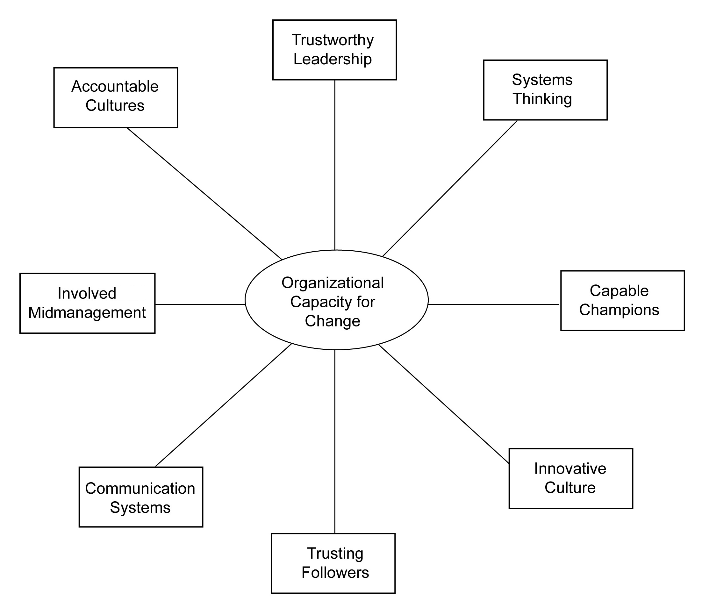

The ability to hold two competing thoughts in one’s mind and still be able to function is the mark of a superior mind.
F. Scott Fitzgerald
The meeting of two personalities is like the contact of two chemical substances: if there is any reaction, both are transformed.
Carl Jung
Strategic leadersI distinguish between “strategic leaders” in this book who are in senior leadership positions at the strategic apex of the organization, and other “leaders” who can demonstrate leadership separate and distinct from their authority or position within the organization. today are facing unrelenting pressures to deliver results. Indeed, whole books are being written based on the central premise that the purpose of leadership is to deliver results—on time and within budget.Ulrich, Zenger, & Smallwood (1999). In light of these withering pressures to deliver predictable short-term results, most leaders conclude that their only option is to react quickly to problems and opportunities as they arise and forget about long-term thinking.
This pressure to change is real and increasing. Ed Lawler and Chris Worley note,
An analysis of the Fortune 1000 corporations shows that between 1973 and 1983, 35 percent of the companies in the top twenty were new. The number of new companies increases to 45 percent when the comparison is between 1983 and 1993. It increases even further, to 60 percent, when the comparison is between 1993 and 2003. Any bets as to where it will be between 2003 and 2013?Lawler and Worley (2006), p. 1.
While executive leaders must react quickly to current problems and opportunities, they must also look to and prepare for the future. And while only a skilled few will have the ability to be “visionary,” one thing you know that the organization will need to do is to become more agile, flexible, and nimble. In other words, their long-term mandate is to build organizational capacity for change.The act of delivering results in the short term while building change capacity for the long term.
In the best-selling book titled The Seven Habits of Highly Successful People, Stephen Covey argued that all individuals must invest time and energy in balancing “productionThe output of an organization or industry.” with “production capacityThe maximum amount of output of an organization or industry..” Furthermore, Covey boldly states that “every production problem is a production capacity opportunity.”Covey (1989), p. 202. While this insight was directed to individuals and personal effectiveness, it also applies to strategic leaders and collective effectiveness.
One popular approach to making the organization more open to change is to resort to fear-based tactics in order to heighten the sense of urgency and productivity of the entire organization. For example, “burning platformsIn change programs, a fear-based metaphor for acting immediately to change and respond in new ways.” is a popular phrase for many change programs—a metaphor for the notion that time is running out and we will all burn up and die if we don’t act immediately to move to or create an entirely new platform or organization.
In the short term, fear works. And in some cases, a fear-based “burning platform” is the most appropriate way to get the organization to quickly understand the need to change and to respond in new ways. By way of a painful recent illustration, Chief Electronics Technician Mike Williams really did have to jump 100 feet off the burning oil rig owned and operated by British Petroleum in the Gulf of Mexico on April 20, 2010, in order to live—he had to jump or else get consumed by the lethal flames, smoke, or explosions—it was literally a matter of life or death.Pelley (2010).
However, invoking the burning platform metaphor too often or for too long a period of time will lead to unhealthy “burnoutPhysical or emotional fatigue that results from prolonged frustration or stress.” for the change champions, create Dilbert-like cynicism from middle managers, and lead to pathological resistance from frontline workers. In short, organizational change is painful, but if there is too much pain or the pain lasts for too long a period of time, the organization begins to break down.Abrahamson (2000).
Consequently, the new leadership mandate for the 21st century is delivering results in the short term while building change capacity for the long term. Capacity-building change initiativesActions designed to deliver results in the short term while building the capacity for change in the long term. take time, and short-term productivity sometimes suffers when the organization explores new organizational values, norms, systems, and routines. Capacity building requires trial, experimentation, and learning and these activities are not efficient in the short term. In general, learning is rarely efficient, but it is essential for organizations to be effective.
Michael Beer and Nitin Nohria, both organizational scholars at the Harvard Business School, argue for a more balanced perspective of leadership as well. Essentially, they assert that the two leading theories of organization are “Theory EAn organization’s pursuit of short-term results in order to elevate an enterprise.,” where the firm pursues short-term results in order to elevate the enterprise, and “Theory OAn organization’s seeking to build long-term organizational capacity.,” where the firm seeks to build long-term organizational capacity.Beer and Nohria (2000). Since much more is known about “Theory E” than “Theory O” approaches, this book will focus on the much newer and harder-to-execute theory.
Consequently, strategic leaders today need to be ambidextrous in their approach to leadership. This balancing act is much more challenging than pushing hard for short-term results or nurturing the organization so that new ideas and capabilities emerge in the long term. Because current pressures usually shove long-term objectives to the side, leaders are proving to be much more practiced in reacting to putting out brush fires in today’s organizations than in preparing the organization to be more change capable. Nonetheless, leaders must learn to fly the plane while rewiring it in flightJudge and Blocker (2008).—this is the mandate of the 21st century.
The notion of the ambidextrous leadership mandate is clear and compelling in principle, but in practice it can be quite challenging. First, individuals tend to be better at one skill than another. For example, leaders who thrive on generating short-term tangible results are often not as adept in building long-term organizational capabilities (and vice versa). Just as right-handed persons struggle with left-handed lay-ups in basketball, leaders often display a “handedness” in their leadership orientation. Of course, with awareness and practice, ambidexterity can be developed, but this is not a trivial endeavor. Hopefully, this book will offer compelling logic and some ideas as to how this ambidexterity can be cultivated.
A second complication is that sometimes the official leadership mandate is different from the unofficial one within a particular organization. When the official mandate does not align with the unofficial one, it can be devastating to leaders and organizations. Laurence Stybel and Maryanne Peabody are organizational consultants based in the Boston area. They coined the term “stealth mandateThe situation in which a leadership mandate is given to an executive while others in the same organization are operating with a completely different mandate.” and observed that it is very common for an executive to be given one leadership mandate while others in that same organization are operating with a completely different mandate.
Generally speaking, leadership mandates fall into one of three major categories: continuity, good to great, and turnaround. Continuity means business as usual: carrying on policies, procedures, and strategies. A typical example is the interim CEO, selected to maintain the status quo until a permanent CEO is found. Good to great refers to Jim Collins’s bestselling book of the same name. A good-to-great mandate is essentially this: We’ve been doing fine, but we can—and need to—do even better. Turnaround means dramatic changes are necessary: No business process, job, or strategy is sacred.Stybel and Peabody (2006), p. 11.
For example, CEOs are sometimes hired to move the organization from “good” to “great.” However, if the top management team or the board of directors or both are operating with a “continuity” mandate, the unofficial mandate clashes with the official one, and chaos often unfolds. When the official mandate is fundamentally different from the unofficial mandate, steps must be taken to bring them into alignment. Usually, this requires extraordinary conflict management skills and emotional maturity on the part of the leader.
A third complication that can challenge this ambidextrous approach to leadership is when the environmental context doesn’t allow the executive sufficient discretion to pursue short-term results while building organizational capacity for change. Some industries are in terminal decline, and the executive leader is not afforded the “luxury” of working for long-term survival. Some nations put employment ahead of productivity, and the executive leader is not allowed to challenge underperforming units. And some organizational culturesA pattern of shared attitudes, practices, and goals unique to an organization. value stasis over excellence. All these constraints can conspire to limit executive discretion so that change capacity is not developed.
Fourth, and perhaps most importantly, organizations are built to perform within an established order, not to change. Managers are often rewarded for predictable results so organizational bureaucracy often gravitates to exploitation over experimentation, efficiency over effectiveness, and leveraging previous learning over generating new insights. Hence, it is a rare organization that is “built to change.”Lawler and Worley (2006).
In the fast-paced world that we live in with all its distractions, some might argue that it isn’t possible to pursue multiple objectives. Essentially, this is the logic behind pursuing shareholder value above all else. Indeed, there is some evidence to support this notion as some leaders pursue the stakeholder approach in order to avoid accountability, preserve self-interested behavior, or both. For example, a fascinating recent study found that the firms that were rated highest in corporate social responsibility were also the ones most likely to engage in earnings managementAn organization’s use of crafty or deceptive accounting practices to deceive those outside of the organization.—essentially using accounting tricks to deceive those outside of the firm.Prior, Surroca, & Prior (2008).
However, even “Neutron Jack” (Welch) understood that a myopic focus on shareholder value would threaten the very survival of General Electric. As such, even while he was laying off thousands of workers and shedding dozens of business units, he was working behind the scenes to build GE’s organizational change capacity, which emerged as his official focus in his later years as CEO. Which leads to a very important insight—the public objective or objectives announced to the rest of the organization do not have to be the same as the private objective or objectives pursued by the leaders of the organization.Welch and Welch (2005).
Louis Gerstner, the former CEO and Chairman of IBM who engineered a historic turnaround at that iconic firm, writes that leaders must be focused and they must be superb at executing a strategy.Gerstner (2002). For Gerstner, focus generated short-term results while execution was about building organizational capacity for change—both efforts were required to return IBM to its industry-leading role.
In summary, the leader’s mandate of the 21st century is to “avoid the tyranny of ‘or’ and pursue the genius of the ‘and.’”Collins and Porras (1994). Those who are entrusted with authority within an organization must pursue results and build organizational capacity for change (OCC). This book details just what organizational capacity for change is, and provides guidance as to how that capacity can be developed. I have been studying this capacity for over 10 years now and have developed a reliable and valid inventory for measuring OCC. With that inventory, I have amassed a considerable amount of data that has been helpful to other executive leaders as they seek to develop their firm’s OCC. This book helps to explain exactly what OCC is and to provide insights as to how executive leaders can pursue it.
This book seeks to assist leaders in building their organizational capacity for change. It is written for any executive who seeks to be more proactive toward change, and wants the process to be less painful and somewhat more predictable. In this first chapter, my objective is to challenge the conventional views about leadership and change so that you can begin to pursue the “genius of the and.”Collins and Porras (1994).
Chapter 2 "What Is Organizational Capacity for Change?" begins by examining what is organizational capacity for change, and why it is important. The one thing that you can be certain of in your future is that you and your organization will need to change. This chapter explores how some organizations do that well. In addition, you will learn that organizational capacity for change comprises eight dimensions, as summarized in Figure 1.1 "Eight Dimensions of Organizational Capacity for Change", and that each succeeding chapter goes into depth on each of these dimensions.
The first dimension of organizational capacity for change, trustworthy leadership, is the focus of Chapter 3 "OCC Dimension 1: Trustworthy Leadership". This chapter explains that authority is not enough to make an organization change capable; the strategic leaders must be perceived to be competent and looking out for the well-being of the rest of the employees in the organization. However, a strategic leader or leaders behaving in a trustworthy fashion are not enough; the followers within the organization must be favorably disposed to trusting their organization. In essence, you also need trusting followers to be change capable. Therefore, in Chapter 4 "OCC Dimension 2: Trusting Followers", we examine how important effective followership is within an organization in order to make it change capable. Together, these two human capital dimensions combine to yield the level of organizational trust that exists within the organization and throughout the organizational hierarchy.
Figure 1.1 Eight Dimensions of Organizational Capacity for Change
Chapter 5 "OCC Dimension 3: Capable Champions" explores the important role of capable champions within change-capable organizations. Change champions are those individuals within the senior executive group, the middle management ranks, or both who drive the change initiatives within an organization. These individuals are often mavericks and they don’t normally fit in well in bureaucratic structures. However, their misfit nature is exactly what is needed in order to drive change successfully.
Chapter 6 "OCC Dimension 4: Involved Midmanagement" examines the role that involved middle managers play in making the organizational change capable. In many organizations, middle management has been hollowed out, downsized, and replaced by computers. The remaining middle management group is often uninvolved with the strategy formation design initiatives. This is a mistake. Middle managers have a unique and important role to play in enhancing the change capability of the organization. When an organization comprises capable champions and involved midmanagement, then you have an opportunity for lateral leadership and effective influence without authority—a key ingredient for making your organization more agile.
Chapter 7 "OCC Dimension 5: Systems Thinking" focuses on systems thinking within the organization. Organizations are complex living systems that are not properly understood by linear thinking and analysis. In this chapter, we explore how systems thinking gets cultivated so that organizational learning is accelerated. Then in Chapter 8 "OCC Dimension 6: Communication Systems", the importance of effective communication systems is investigated. When an organization combines systems thinking with high-functioning communication systems, systemic knowledge is created and dispersed throughout the organization.
The final two chapters explore the role of organizational culture and change. Specifically, Chapter 9 "OCC Dimension 7: Accountable Culture" demonstrates the importance of having an accountable culture where there are consequences for employees that fail or succeed. However, this cultural attribute needs to be counterbalanced with an innovative culture, which is the focus of Chapter 10 "OCC Dimension 8: Innovative Culture". Together, these two dimensions of organizational change capacity—accountability and innovativeness—help to ensure that the organization efficiently marshals scarce resources while creatively looking to the future.
Chapter 11 "The Big Picture" provides a “big picture” perspective on organizational capacity for change, as well as guidance for assessing your organization’s capacity for change. Specifically, it provides ideas and suggestions for utilizing the survey listed in Chapter 12 "Appendix A: OCC Survey Instrument" to collect data and the benchmark data listed in Chapter 13 "Appendix B: 8 Dimensions and Factor Loadings for OCC", Chapter 14 "Appendix C: OCC Benchmarking", and Chapter 15 "Appendix D: OCC Benchmarking" that can be used for comparisons between your organization and other organizations that have already been assessed. Chapter 17 "References" contains the references cited in this book, and Chapter 16 "Appendix E: Resources" contains some simulations, readings, and cases that can be used to further explore the organizational capacity for change framework. Chapter 16 "Appendix E: Resources" also contains additional resources for teaching, researching, and learning about organizational capacity for change.